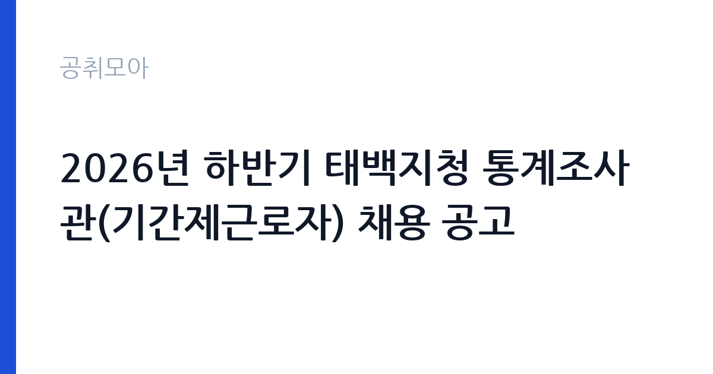

[국가기관] 2026년 하반기 태백지청 통계조사관(기간제근로자) 채용 공고
고용노동부 중부지방고용노동청 태백지청 · 전국 · 마감 2026-10-16 (D-14) · 출처 나라일터

한눈에 보는 모집 조건
| 기관 | 고용노동부 중부지방고용노동청 태백지청 |
|---|---|
| 공고명 | 2026년 하반기 태백지청 통계조사관(기간제근로자) 채용 공고 |
| 고용형태 | 기간제 |
| 근무지 | 전국 |
| 게시일 | 2026-10-02 |
| 마감일 | 2026-10-16 (D-14) |
지원자격, 이렇게 읽으세요
- 통계조사관 2명
- 접수 ~2026-10-16 마감
- 세부 조건은 원문 공고문 확인
통계조사관 채용은 특별한 자격증이나 학력 조건을 요구하지 않는 경우가 많습니다. 원문 발췌에 자격 제한이 별도로 나와 있지 않으므로, 사업체 방문 조사와 조사표 입력 업무를 수행할 수 있는 분이면 지원할 수 있습니다. 다만 현장조사를 다니는 직무라 태백과 삼척, 영월 등 관할 지역 이동이 가능한 분이 유리합니다. 제출 서류는 입사지원서와 자기소개서, 개인정보 및 고유식별정보 활용 동의서로 간단해 준비 부담이 적습니다. 자기소개서에서 현장 조사 경험이나 대인 응대 경험을 어필하면 좋습니다. 정확한 응시 자격은 원문 공고문의 자격 요건 항목에서 반드시 확인하십시오.
이 공고의 포인트
이 공고의 가장 큰 장점은 보수가 투명하다는 점입니다. 일급 78,560원과 식비 월 16만원이 공고에 못 박혀 있어 합격 후 수입을 정확히 예측할 수 있습니다. 주 5일 주 40시간 근무 기준으로 월 20일 근무 시 일급분만 약 157만원에 식비가 더해집니다. 계약기간은 원문 표기상 2026년 10월 2일부터 10월 17일까지로 짧게 적혀 있으나 약 1.5개월이라는 설명이 함께 있으므로, 정확한 계약 조건은 원문에서 재확인하셔야 합니다. 통계조사관 경력은 이후 각종 공공기관 조사원이나 기간제 조사 업무 지원 시 직접적인 경력으로 활용됩니다. 서류가 간단하고 면접까지 일정이 촘촘해 한 달 안에 결과가 나오는 점도 장점입니다.
전형은 어떻게 진행되나
전형 일정이 공고에 날짜까지 못 박혀 있습니다. 서류접수는 2026년 10월 2일부터 10월 16일 18시까지이며, 서류전형 합격자 발표와 면접시험 장소 공고는 10월 21일에 나옵니다. 면접전형은 10월 23일에 실시되고 최종 합격자는 10월 27일에 발표됩니다. 서류전형에서는 지원서와 자기소개서를 중심으로 조사 업무 수행 능력을 평가하므로, 방문 조사나 설문 조사, 데이터 입력 경험을 구체적으로 적으십시오. 면접에서는 사업체 담당자를 상대하는 응대 태도와 조사 거절 상황에서의 대처, 개인정보 보호 의식을 묻는 질문이 나올 수 있습니다. 일정이 촉박하게 이어지므로 서류 접수와 동시에 면접 준비를 시작하십시오.
원문에서 확인한 전형 방식
1. 채용인원: 2명 2. 담당업무: 지역별사업체노동력조사 비대면, 현장조사 수행, 조사표 입력, 내용검토 등 3. 접수기간: 2026. 10. 2.(금)~10.16.(금) 18:00 4. 제출서류: 입사지원서, 자기소개서, 개인정보 및 고유식별정보활용동의서 5. 서류전형 합격자 발표 및 면접시험 장소 공고일: 2026. 10. 21.(수) 6. 면접전형: 2026. 10. 23.(금) 7. 최종 합격자 발표일: 2026. 10. 27.(화) 8. 계약기간: 2026. 10. 2.~2026. 10.17.(약 1.5개월) 9. 보수수준 : 일급 78,560원, 식비 월 16만원(식비는 일할지급) 10. 근무시간: 주5일(월~금), 주40시간(09:00~18:00) 기타 자세한 사항은 붙임 공고문 참조
이런 분께 추천해요
- 단기 공공일자리를 찾는 태백과 인근 지역 거주자께 추천합니다. 보수가 명확하고 출퇴근이 가능한 관할 지역 근무입니다.
- 조사원이나 설문 조사 업무 경험을 살려 공공기관 경력을 쌓고 싶은 분께 추천합니다. 고용노동부 지청 근무 경력은 이후 조사 업무 지원에 강점이 됩니다.
- 제출 서류가 간단한 공고를 찾는 분께 추천합니다. 지원서와 자기소개서, 동의서만으로 지원할 수 있어 준비 부담이 적습니다.
지원 전 체크리스트
- 계약기간 표기가 원문에서 2026년 10월 2일부터 10월 17일까지와 약 1.5개월로 함께 적혀 있으니, 정확한 근로계약 기간을 태백지청에 확인하십시오.
- 일급 78,560원과 식비 월 16만원의 일할 지급 조건을 확인하십시오. 식비가 근무일수에 비례해 지급되므로 실제 수령액을 미리 계산해 보십시오.
- 근무시간이 주 5일 09시부터 18시까지 주 40시간인지, 현장조사 일정에 따라 변동이 있는지 원문에서 확인하십시오.
- 서류접수 마감 시각이 10월 16일 18시이므로 마감 당일 접수는 피하고 여유 있게 제출하십시오. 제출 서류 3종이 모두 갖춰졌는지 점검하십시오.
모집 일정과 제출 타이밍
접수는 2026년 10월 2일부터 10월 16일 18시까지로 2주가 주어집니다. 서류전형 합격자는 10월 21일에 발표되고 면접은 10월 23일, 최종 합격은 10월 27일입니다. 지원부터 최종 발표까지 한 달이 채 걸리지 않는 빠른 일정입니다. 자기소개서는 이번 주말 안에 완성하고 다음 주 초에 접수하는 일정이 안전합니다. 면접 대상자가 되면 10월 21일부터 23일까지 이틀밖에 준비 시간이 없으므로, 지역별사업체노동력조사가 무엇인지 미리 공부해 두십시오. 합격 후 바로 근무가 시작될 수 있으니 일정 비움 여부도 점검하십시오.
직무 이해하기: 국가기관
통계조사관은 지역별사업체노동력조사의 현장 실무를 담당합니다. 사업체를 직접 방문하거나 비대면 방식으로 조사표를 작성하고, 수집한 조사표를 시스템에 입력한 뒤 내용을 검토하는 것이 주 업무입니다. 지역별사업체노동력조사는 고용노동부가 반기마다 실시하는 국가승인통계로, 사업체의 종사자 수와 빈 일자리, 채용 계획 등을 파악해 고용정책의 기초자료로 활용합니다. 조사원은 조사 대상 사업체 명부를 받아 방문 일정을 조율하고, 담당자를 만나 조사 항목을 설명한 뒤 응답을 받아냅니다. 거절 사업체에 대한 설득과 재방문도 업무에 포함되며, 입력 단계에서는 응답 오류를 걸러내는 꼼꼼함이 요구됩니다.
자기소개서 작성 팁
자기소개서는 현장 대응력과 성실성을 중심으로 작성하십시오. 방문 영업이나 고객 응대, 설문 조사 경험이 있다면 응답률 제고 사례와 함께 적으면 좋습니다. 조사 거절을 당했던 경험과 이를 극복한 과정을 솔직하게 쓰면 면접관의 공감을 얻을 수 있습니다. 태백 지역 지리와 사업체 분포에 대한 이해가 있다면 언급하고, 자차 운전 가능 여부도 밝혀 이동 대응력을 어필하십시오. 개인정보를 다루는 업무이므로 비밀 유지 의식을 한 문단으로 분명히 적으십시오. 분량은 A4 한 장 안팎으로 핵심만 정리하는 것이 좋습니다.
면접 준비 포인트
면접에서는 조사 업무 이해도와 현장 대응력을 묻는 질문이 중심입니다. 사업체 담당자가 조사를 거절하면 어떻게 하겠는지, 바쁜 점심시간에 방문했는데 문전박대당하면 어떻게 대처할 것인지 같은 상황 질문을 준비하십시오. 지역별사업체노동력조사의 목적과 조사 항목을 간단히 설명할 수 있어야 하며, 수집한 자료의 비밀 보호에 대한 각오도 밝혀야 합니다. 단기 계약직이라도 조사 기간 내내 결근 없이 임하겠다는 책임감을 보여주는 것이 중요합니다. 복장은 단정하게 하고, 태백 지역 근무 가능 여부를 묻는다면 명확히 답하십시오.
급여·근무조건 읽는 법
보수는 원문 공고에 명시된 대로 일급 78,560원에 식비 월 16만원이며 식비는 일할 지급됩니다. 주 5일 근무를 한 달 풀로 채우면 일급분 약 157만원에 근무일수에 비례한 식비가 더해집니다. 기간제근로자이므로 4대보험이 적용되고, 계약기간에 따라 퇴직금 지급 대상 여부가 갈리니 원문의 근로조건 항목에서 확인하십시오. 초과근무가 발생하면 시간외수당이 별도로 지급되는지도 확인하셔야 합니다. 실수령액은 일급과 식비 합산액에서 4대보험 본인부담금과 소득세를 제외한 금액이 되며, 정확한 계산은 합격 후 근로계약서를 기준으로 하십시오. 경쟁률과 합격선은 공개되지 않으므로 원문에서 확인되는 정보가 없습니다.
자주 묻는 질문
- 일급 78,560원이면 월급은 얼마입니까?
주 5일 기준 월 20일 근무 시 일급분만 약 157만원이며 여기에 근무일수에 비례한 식비가 더해집니다. 정확한 실수령액은 4대보험료와 세금을 제외한 금액으로 근로계약서에서 확인하십시오. - 계약기간이 10월 2일부터 10월 17일이면 2주입니까?
원문 발췌에는 같은 기간 표기와 함께 약 1.5개월이라는 설명이 병기되어 있어 표기가 엇갈립니다. 정확한 계약기간은 태백지청 담당자에게 직접 확인하시기 바랍니다. - 조사 경험이 없어도 지원할 수 있습니까?
원문 발췌에 별도 자격 조건이 명시되어 있지 않아 관련 경험이 없어도 지원 자체는 가능합니다. 다만 자기소개서에서 대인 응대 경험과 성실성을 충분히 어필해야 서류전형을 통과할 수 있습니다.
함께 보면 좋은 공고
[국가기관] 2026년 인제경찰서 무기계약(보일러 등 시설관리) 근로자 채용 재공고 — 마감 2026-10-08[국가기관] 보건복지부 아동보호자립과 공무직 채용 일정 변경 공고 — 마감 2026-10-13[국가기관] 국립목포대학교 입학사정관 채용 공고 — 마감 2026-10-15출처: 나라일터 공개정보를 바탕으로 공취모아가 정리한 안내글입니다. 모집 조건·일정은 변경될 수 있으니 지원 전 반드시 원문 공고문을 확인하세요. 본 글은 정보 제공용이며 합격을 보장하지 않습니다.